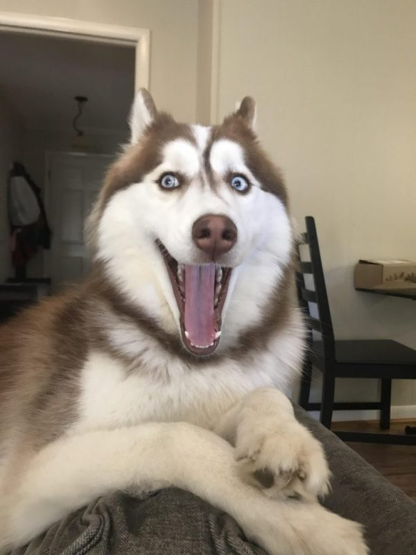
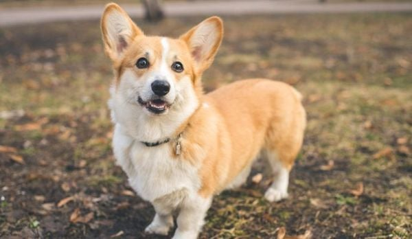
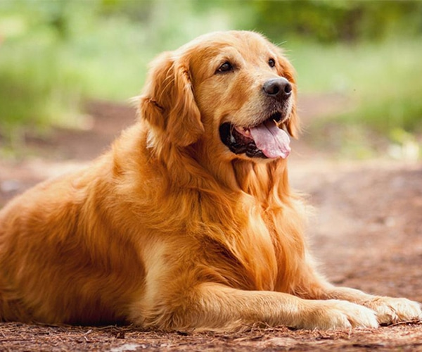

-Nguồn gốc: Có nguồn gốc từ Đức và Pháp, vốn là giống chó săn vịt trên mặt nước.
-Đặc điểm ngoại hình: Điểm nổi bật nhất là bộ lông xoăn tít, dày dặn và đặc biệt là rất ít rụng lông, phù hợp cho người bị dị ứng. Chúng có 3 kích thước phổ biến: Toy (nhỏ), Miniature (vừa) và Standard (lớn).
-Tính cách: Đứng thứ 2 trong danh sách các loài chó thông minh nhất thế giới. Poodle rất dễ huấn luyện, nhanh nhẹn và cực kỳ quấn chủ.
-Lưu ý khi nuôi: Cần được chải lông hằng ngày và cắt tỉa định kỳ để tránh rối lông.
Chó Husky
Tinh nghịch, đôi mắt xanh và cực kỳ năng động.

Chó Husky – "Người bạn ngáo ngơ"
Nguồn gốc: Đến từ vùng Siberia (Nga), tổ tiên dùng để kéo xe tuyết.
Đặc điểm ngoại hình: Có vẻ ngoài giống như một chú sói với đôi mắt thường có màu xanh dương hoặc hai màu khác nhau. Bộ lông hai lớp rất dày giúp chịu lạnh tốt.
Tính cách: Husky nổi tiếng với sự tinh nghịch, hay "cãi lời" chủ bằng những tiếng hú dài. Chúng rất thân thiện với người lạ nhưng lại cực kỳ tăng động.
Lưu ý khi nuôi: Cần không gian rộng và được đi chạy bộ hằng ngày để giải tỏa năng lượng, nếu không chúng rất dễ "phá nhà".
Chó Corgi
Chân ngắn, mông tròn và vô cùng đáng yêu.

Chó Corgi – "Chú lùn đáng yêu"
Nguồn gốc: Xứ Wales (Vương quốc Anh), ban đầu được nuôi để chăn gia súc.
Đặc điểm ngoại hình: Thân hình dài nhưng bốn chân cực ngắn, đôi tai to dựng đứng và khuôn mặt luôn trông như đang mỉm cười. Đặc biệt, "vòng ba" tròn trịa của Corgi là điểm khiến nhiều người mê mẩn.
Tính cách: Thông minh, cảnh giác và có phần hơi bướng bỉnh. Corgi rất trung thành và thích tham gia vào các hoạt động của gia đình
.
Lưu ý khi nuôi: Dễ bị béo phì và gặp các vấn đề về xương sống do lưng dài chân ngắn, nên cần kiểm soát chế độ ăn kỹ lưỡng.
Chó Golden
Người bạn trung thành, hiền lành của mọi gia đình.

Chó Golden Retriever – "Thiên sứ ấm áp"
Nguồn gốc: Scotland, là giống chó săn chuyên thu hồi con mồi.
Đặc điểm ngoại hình: Có bộ lông màu vàng (từ kem đến vàng đậm) mượt mà và không thấm nước. Khuôn mặt hiền lành, đôi tai cụp và chiếc đuôi luôn vẫy mừng.
Tính cách: Được mệnh danh là "loài chó quốc dân" vì cực kỳ hiền lành, kiên nhẫn và yêu trẻ em. Golden rất thích lấy lòng chủ nhân và làm việc theo mệnh lệnh.
Lưu ý khi nuôi: Rụng lông khá nhiều, đặc biệt là vào mùa thay lông. Chúng rất thích nước nên bạn có thể cho chúng đi bơi thường xuyên.